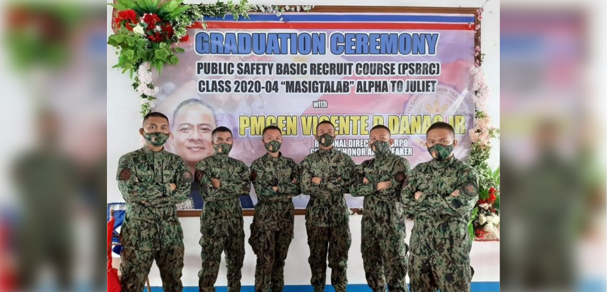

June 23, 2021
Fatima alumni continue to rise to the top!
Patrolwoman Jessa C. Agcaoili, a Criminology graduate from the Our Lady of Fatima University (OLFU) Valenzuela Campus, Batch 2019, received all major awards at the graduation ceremony of the National Capital Region Training Center's (NCRTC) Public Safety Basic Recruit Course (PSBRC) Class 2020-04 "MASIGTALAB" which was conducted from October 30, 2020 to June 7, 2021 at the Philippine National Police Training Institute, Camp Bagong Diwa, Taguig City.
Ptwn. Agcaoili was awarded the following: Certificate of Merit for graduating Number 1 out of 519 police trainees; Academic Proficiency Aw for having obtained the highest rating of 90.824% in the over-all academic phase in a class of fifty-two (52) student-Police Non-Commissioned Officers (PNCOs); Certificate of Recognition for having obtained the highest rating of 83.250% in the Comprehensive Examination, and a Certificate of Commendation for graduating Number 1 with a final rating of 91.79% over-all in academic and non-academic phases of the training.
Held at the NCRTC Covered Court, the awarding ceremony was graced by the Director of the National Capital Region Police Office, Police Major General Vicente D. Danao, who personally handed over the awards to the Top 3. He was assisted by Police Colonel Roman B. Dela Cruz Jr., Chief of the NCRTC.
Another OLFU graduate, Patrolman James Christopher S. Morato from the Quezon City Campus, was likewise recognized. He ranked Number 9 with a final rating of 89.64% over-all in academic and non-academic phases of the training.
Other rookies from OLFU College of Criminal Justice also completed the training. They are: Pat. Markie Cultura, Patwn. Sharon Faith Nisperos and Pat. Jeremiah Kane Camingue from the Quezon City Campus; and Pat. Jerome Estrada, Pat. Reymart Estrada, Pat. Rich Lee De Belen, Pat. Jomar Quirino, Pat. Junard Acedera, Pat. John Marco Ortiz, Pat. Mark Anthony Barredo, Patwn. Bianca Basa, Pat. Curt Kane Muncal and Pat. Ian Capangyarihan from the Valenzuela Campus.
Pat. Matthew Allan Barinque from the Quezon City Campus and Pat. Ferie John Victoriano from the Valenzuela Campus simultaneously completed their basic training at Police Regional Office 4 Regional Training Center, Camp Vicente Lim, Laguna.
Congratulations!
Rise to the top!